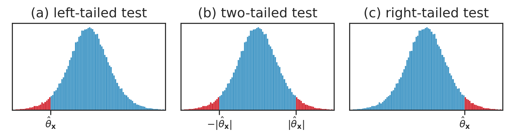

Section 3.3 — Introduction to hypothesis testing
Contents
Section 3.3 — Introduction to hypothesis testing#
This notebook contains the code examples from Section 3.3 Introduction to hypothesis testing of the No Bullshit Guide to Statistics.
Notebook setup#
# load Python modules
import os
import numpy as np
import pandas as pd
import seaborn as sns
import matplotlib.pyplot as plt
# Plot helper functions
from plot_helpers import plot_pdf
from plot_helpers import savefigure
# Figures setup
sns.set_theme(
context="paper",
style="whitegrid",
palette="colorblind",
rc={'figure.figsize': (7,4)},
)
blue, orange = sns.color_palette()[0], sns.color_palette()[1]
red = sns.color_palette("tab10")[3]
DESTDIR = "figures/stats/NHST"
%config InlineBackend.figure_format = 'retina'
# set random seed for repeatability
np.random.seed(42)
Definitions#
What is hypothesis testing?#
An approach to formulating research questions as yes-no decisions and a procedure for making these decisions
Hypothesis testing is a standardized procedure for doing statistical analysis
(also, using stats jargon makes everything look more convincing ;)We formulate research question as two competing hypotheses:
Null hypothesis \(H_0\) = no effect.
In our example: “no difference between means,” which can be written as \(\color{red}{\mu_S = \mu_{NS} = \mu_0}\), means the probability models for the two groups have the same mean \(\mu_0\): $\( H_0: \qquad X_S = \mathcal{N}(\color{red}{\mu_0}, \sigma_S) \quad \textrm{and} \quad X_{NS} = \mathcal{N}(\color{red}{\mu_0}, \sigma_{NS}) \quad \)$Alternative hypothesis \(H_A\) = an effect exists. In our example: “the means for Group S is different from the mean of Group NS” can be written as \(\color{blue}{\mu_S} \neq \color{orange}{\mu_{NS}}\). The probability models for the two groups with different means are: $\( H_A: \qquad X_S = \mathcal{N}(\color{blue}{\mu_S}, \sigma_S) \quad \textrm{and} \quad X_{NS} = \mathcal{N}(\color{orange}{\mu_{NS}}, \sigma_{NS}) \)$
The purpose of hypothesis testing is to perform a basic sanity-check to show the difference between the group means we observed (\(d = \overline{\mathbf{x}}_{S} - \overline{\mathbf{x}}_{NS} = 130\)) is unlikely to have occurred by chance.
NEW CONCEPT: the \(p\)-value is the probability of observing \(d=130\) (or more extreme) under the null hypothesis.
The logic of hypothesis testing#
Overview of the hypothesis testing procedure#
Here is the high-level overview of the hypothesis testing procedure:
inputs: sample statistics computed from the observed data (in our case the signal \(\overline{\mathbf{x}}_S\), \(\overline{\mathbf{x}}_{NS}\), and our estimates of the noise \(s^2_S\), and \(s^2_{NS}\))
outputs: a decision that is one of: “reject the null hypothesis” or “fail to reject the null hypothesis”

We’ll now look at two different approaches for computing the sampling distribution of the difference between group means statistic, \(D = \overline{\mathbf{X}}_S - \overline{\mathbf{X}}_{NS}\): permutation tests and analytical approximations.
Interpreting the result of a hypothesis test (optional)#
The implication of rejecting the null hypothesis (no difference) is that there must be a difference between the group means. In other words, the average ELV (employee lifetime value) for employees who took the statistics training (Group S) is different form the average ELV for employees who didn’t take the statistics training (Group NS), which is what Amy is trying to show.
Note that rejecting null hypothesis (\(H_0\)) is not the same as “proving” the alternative hypothesis (\(H_A\)); we have just shown that the data is unlikely under the null hypothesis, so there must be some difference between the groups. The conclusion is that it’s worth looking for some alternative hypothesis.
The alternative hypothesis we picked above, \(\mu_S \neq \mu_{NS}\), is just a placeholder, that includes desirable effect: \(\mu_S > \mu_{NS}\) (stats training improves ELV), but also includes the opposite effect: \(\mu_S < \mu_{NS}\) (stats training decreases ELV).
Using statistics jargon, when we reject the hypothesis \(H_0\) we say we’ve observed a “statistically significant” result, which sounds a lot more impressive than it actually is. The null hypothesis testing procedure is used to just rule out “occurred by chance” scenario, which is a very basic sanity check.
The implication of failing to reject the null hypothesis is that the observed difference between means is “not significant,” meaning it could have occurred by chance, so there is no need to search for an alternative hypothesis.
Note that “failing to reject” is not the same as “proving” the null hypothesis.
Note also that “failing to reject \(H_0\)” doesn’t mean we reject \(H_A\). In fact, the alternative hypothesis didn’t play any role in the calculations whatsoever.
I know all this sounds super complicated and roundabout (an it is!), but you will get a hang of it with practice. Trust me, you need to know this shit.
Comparing one group to a theoretical model#
Description of the problem: compare simple of obs. to an known population model
Kombucha bottling process#
Reminder of Kombucha bottling scenario where theory: \(K \sim \mathcal{N}(1000,10)\), samples: ⑤ kombucha
Computational approach: simulation given mu_0 and sigma_0 are known
# simulation based sampling distributoin
def gen_sampling_dist(rv, statfunc, n, N=10000):
stats = []
for i in range(0, N):
sample = rv.rvs(n)
stat = statfunc(sample)
stats.append(stat)
return stats
Example 1: test for a difference in means#
Batch 04: statistically significant; cal effect size: xbar-mu; boot CI for xbar-mu_0
Batch 01: not statistically significant
Example 2: test for a difference in variance#
Batch 02: not statistically significant
Batch 08: calc effect size: s-sigma_0 and boot CI for s-sigma_0
Comparing two groups#
Example 3: electricity prices#
eprices = pd.read_csv("../datasets/eprices.csv")
# eprices
eprices.groupby("end")["price"].describe()
| count | mean | std | min | 25% | 50% | 75% | max | |
|---|---|---|---|---|---|---|---|---|
| end | ||||||||
| East | 9.0 | 6.155556 | 0.877655 | 4.8 | 5.5 | 6.3 | 6.5 | 7.7 |
| West | 9.0 | 9.155556 | 1.562139 | 6.8 | 8.3 | 8.6 | 10.0 | 11.8 |
def dmeans(xsample, ysample):
"""
Compute the difference in means between the two samples.
"""
dhat = np.mean(xsample) - np.mean(ysample)
return dhat
# observed difference between means
xW = eprices[eprices["end"]=="West"]["price"]
xE = eprices[eprices["end"]=="East"]["price"]
dmeans(xW, xE)
3.000000000000001
def resample_under_H0(data, groupcol="group"):
"""
Return a copy of the dataframe `sample` with the labels in the column `groupcol`
modified based on a random permutation of the values in the original sample.
"""
redata = data.copy()
labels = data[groupcol].values
newlabels = np.random.permutation(labels)
redata[groupcol] = newlabels
return redata
# resample_under_H0(eprices)
# permute the `end` labels
eprices_perm = resample_under_H0(eprices, groupcol="end")
# extract price permuted samples
xW = eprices_perm[eprices_perm["end"]=="West"]["price"]
xE = eprices_perm[eprices_perm["end"]=="East"]["price"]
# compute the difference in means for the permuted labels
dmeans(xW, xE)
-0.24444444444444446
def gen_sampling_dist_under_H0(data, permutations=10000):
"""
Obtain the sampling distribution of `dmeans` under H0
by repeatedly permutations of the group labels.
"""
pstats = []
for i in range(0, permutations):
data_perm = resample_under_H0(data, groupcol="end")
xW_perm = data_perm[data_perm["end"]=="West"]["price"]
xE_perm = data_perm[data_perm["end"]=="East"]["price"]
dhat_perm = dmeans(xW_perm, xE_perm)
pstats.append(dhat_perm)
return pstats
def permutation_test(data):
"""
Compute the p-value of the observed `dmeans(xW,xE)` under H0.
"""
# Obtain the sampling distribution of `dmeans` under H0
pstats = gen_sampling_dist_under_H0(data)
# Compute the value of `dmeans` for the observed data
xW = eprices[eprices["end"]=="West"]["price"]
xE = eprices[eprices["end"]=="East"]["price"]
dhat = dmeans(xW, xE)
# Compute p-value of `dhat` under the distribution `pstats`
# (how many of `pstats` are equal-or-more-extreme than `dhat`)
tailstats = [pstat for pstat in pstats \
if pstat <= -abs(dhat) or pstat >= abs(dhat)]
pvalue = len(tailstats) / len(pstats)
return pvalue
pvalue = permutation_test(eprices)
pvalue
0.0001
from scipy.stats import ttest_ind
xW = eprices[eprices["end"]=="West"]["price"]
xE = eprices[eprices["end"]=="East"]["price"]
ttest_ind(xW, xE, permutations=100000).pvalue
0.00012340600575894693
Example 4: sleep scores#
Explanations#
One-sided and two-sided tests#
# # plot the sampling distribution in blue
# sns.histplot(sampling_dist, bins=200)
# # plot red line for the observed statistic
# obsstat = dmeans(data)
# plt.axvline(obsstat, color='r')
# # plot the values that are equal or more extreme in red
# tailstats = [rs for rs in sampling_dist if rs <= -obsstat or rs >= obsstat]
# _ = sns.histplot(tailstats, bins=200, color="red")
filename = os.path.join(DESTDIR, "panel_hist_p-values_left_twotailed_right_tests.pdf")
from scipy.stats import t as tdist
rvT = tdist(9)
xs = np.linspace(-4, 4, 1000)
ys = rvT.pdf(xs)
N = 100000
np.random.seed(42)
ts = rvT.rvs(N)
bins = np.linspace(-4, 4, 100+1)
with plt.rc_context({"figure.figsize":(7,2)}), sns.axes_style("ticks"):
fig, (ax1, ax2, ax3) = plt.subplots(1, 3, sharey=True)
# LEFT
title = '(a) left-tailed test'
ax1.set_title(title, fontsize=13)
sns.histplot(ts, ax=ax1, bins=bins)
ax1.set_xlim(-4, 4)
ax1.set_xticks([-2])
ax1.set_xticklabels([])
ax1.set_yticks([])
ax1.set_ylabel("")
# highlight the left tail
tailstats1 = [t for t in ts if t <= -2]
sns.histplot(tailstats1, bins=bins, ax=ax1, color="red")
ax1.text(-2, -200, r"$\hat{\theta}_{\mathbf{x}}$", va="top", ha="center")
# TWO-TAILED
title = '(b) two-tailed test'
ax2.set_title(title, fontsize=13)
sns.histplot(ts, ax=ax2, bins=bins)
ax2.set_xlim(-4, 4)
ax2.set_xticks([-2,2])
ax2.set_xticklabels([])
ax2.set_yticks([])
# highlight the left and right tails
tailstats2 = [t for t in ts if t <= -2 or t >= 2]
sns.histplot(tailstats2, bins=bins, ax=ax2, color="red")
ax2.text(-2, -200, r"$-|\hat{\theta}_{\mathbf{x}}|$", verticalalignment="top", horizontalalignment="center")
ax2.text(2, -200, r"$|\hat{\theta}_{\mathbf{x}}|$", verticalalignment="top", horizontalalignment="center")
# RIGHT
title = '(c) right-tailed test'
ax3.set_title(title, fontsize=13)
sns.histplot(ts, ax=ax3, bins=bins)
ax3.set_xlim(-4, 4)
ax3.set_xticks([2])
ax3.set_xticklabels([])
ax3.set_yticks([])
# highlight the right tail
tailstats3 = [t for t in ts if t >= 2]
sns.histplot(tailstats3, bins=bins, ax=ax3, color="red")
ax3.text(2, -200, "$\hat{\\theta}_{\mathbf{x}}$", verticalalignment="top", horizontalalignment="center")
savefigure(fig, filename)
Saved figure to figures/stats/NHST/panel_hist_p-values_left_twotailed_right_tests.pdf
Saved figure to figures/stats/NHST/panel_hist_p-values_left_twotailed_right_tests.png

Discussion#
Exercises#
# TODO
Links#
The Introductory Statistics Course: A Ptolemaic Curriculum by George W. Cobb
Permutation Methods: A Basis for Exact Inference by Michael D. Ernst
What Teachers Should Know About the Bootstrap: Resampling in the Undergraduate Statistics Curriculum by Tim C. Hesterberg
[BOOK] Think Stats 2e by Allen B. Downey
[VIDEO] There’s Only One Test by Allen B. Downey
[TALK] Statistics for Hackers by Jake Vanderplas
Imported stuff from overview#
Start by loading the data again…#
First things first, let’s reload the cleaned data file that we prepared back in the notebook 01_DATA.ipynb.
data = pd.read_csv('../stats_overview/data/employee_lifetime_values.csv')
data
| group | ELV | |
|---|---|---|
| 0 | NS | 923.87 |
| 1 | NS | 751.38 |
| 2 | NS | 432.83 |
| 3 | NS | 1417.36 |
| 4 | NS | 973.24 |
| ... | ... | ... |
| 56 | S | 931.61 |
| 57 | S | 1329.68 |
| 58 | S | 1293.03 |
| 59 | S | 1240.44 |
| 60 | S | 1105.59 |
61 rows × 2 columns
# remember the descriptive statistics
data.groupby("group").describe()
| ELV | ||||||||
|---|---|---|---|---|---|---|---|---|
| count | mean | std | min | 25% | 50% | 75% | max | |
| group | ||||||||
| NS | 31.0 | 1018.41129 | 265.815869 | 432.83 | 858.7750 | 990.130 | 1183.2750 | 1620.93 |
| S | 30.0 | 1148.43500 | 233.037704 | 623.06 | 1022.1375 | 1119.305 | 1279.8825 | 1716.61 |
def dmeans(sample):
"""
Compute the difference between groups means.
"""
xS = sample[sample["group"]=="S"]["ELV"]
xNS = sample[sample["group"]=="NS"]["ELV"]
d = np.mean(xS) - np.mean(xNS)
return d
# the observed value in Amy's data
dmeans(data)
130.02370967741933
Our goal is to determine how likely or unlikely this observed value \(d=130\) is under the null hypothesis \(H_0\).
In the next two sections, we’ll look at two different approaches for obtaining the sampling distribution of \(D\) under \(H_0\): permutation test and analytical approximations.
Approach 1: Permutation test for comparing two groups#
The permutation test allow us to generate the sampling distribution under \(H_0\) by reusing the sample \(\mathbf{x}\) that we have, treating it as if it were a population.
Relevant probability distributions:
Real sampling distribution: obtained from repeated samples from a hypothetical population under \(H_0\).
Approximate sampling distribution: obtained by resampling data from the single sample we have.
Recall Goal 1: make sure that the observed difference is unlikely to have occurred by chance under \(H_0\) (the difference between group means \(d=130\) cannot be explained by the natural variability of the distributions)
We want to obtain an approximation of the sampling distribution under \(H_0\)
The \(H_0\) probability model describes a hypothetical scenario with no difference between groups, which means data from Group S and Group NS comes the same distribution.
To generate a new random sample \(\mathbf{x}^p\) from the \(H_0\) model, we can reuse the sample we have obtained \(\mathbf{x}\), but randomly mix-up the group labels. Since under the \(H_0\) model, the S and NS populations are identical, mixing up the labels should have no effect.
The math term for “mixing up” is permutation, meaning each value in the input is randomly reassigned to a new random place in the output.
def resample_under_H0(sample, groupcol="group"):
"""
Return a copy of the dataframe `sample` with the labels in the column `groupcol`
modified based on a random permutation of the values in the original sample.
"""
resample = sample.copy()
labels = sample[groupcol].values
newlabels = np.random.permutation(labels)
resample[groupcol] = newlabels
return resample
resample_under_H0(data)
| group | ELV | |
|---|---|---|
| 0 | NS | 923.87 |
| 1 | S | 751.38 |
| 2 | NS | 432.83 |
| 3 | S | 1417.36 |
| 4 | S | 973.24 |
| ... | ... | ... |
| 56 | S | 931.61 |
| 57 | NS | 1329.68 |
| 58 | S | 1293.03 |
| 59 | NS | 1240.44 |
| 60 | S | 1105.59 |
61 rows × 2 columns
# resample
resample = resample_under_H0(data)
# compute the difference in means for the new labels
dmeans(resample)
-14.170451612903207
The function resample_under_H0 gives us a way to generate samples from the null hypothesis.
We can then compute the value of the dmeans statistic for these samples. We used the assumption of “no difference” under the null hypothesis, and translated this to the “forget the labels” interpretation.
Running a permutation test#
We can repeat the resampling procedure 10000 times to get the sampling distribution of \(D\) under \(H_0\),
as illustrated in the code procedure below.
def permutation_test(sample, statfunc, groupcol="group", permutations=10000):
"""
Compute the p-value of the observed `statfunc(sample)` under the null hypothesis
where the labels in the `groupcol` are randomized.
"""
# 1. compute the observed value of the statistic for the sample
obsstat = statfunc(sample)
# 2. generate the sampling distr. under H0
restats = []
for i in range(0, permutations):
resample = resample_under_H0(sample, groupcol=groupcol)
restat = statfunc(resample)
restats.append(restat)
# 3. compute p-value: how many `restat`s are equal-or-more-extreme than `obsstat`
tailstats = [restat for restat in restats \
if restat <= -abs(obsstat) or restat >= abs(obsstat)]
pvalue = len(tailstats) / len(restats)
return restats, pvalue
sampling_dist, pvalue = permutation_test(data, statfunc=dmeans)
# plot the sampling distribution in blue
sns.histplot(sampling_dist, bins=200)
# plot red line for the observed statistic
obsstat = dmeans(data)
plt.axvline(obsstat, color='r')
# plot the values that are equal or more extreme in red
tailstats = [rs for rs in sampling_dist if rs <= -obsstat or rs >= obsstat]
_ = sns.histplot(tailstats, bins=200, color="red")
Once we have the sampling distribution of
Dunder \(H_0\), we can see where the observed value \(d=130\) falls within this distribution.p-value: the probability of observing value \(d=130\) or more extreme under the null hypothesis
pvalue
0.0467
We can now make the decision based on the \(p\)-value and a pre-determined threshold:
If the observed value \(d\) is unlikely under \(H_0\) (\(p\)-value less than 5% chance of occurring), then our decision will be to “reject the null hypothesis.”
Otherwise, if the observed value \(d\) is not that unusual (\(p\)-value greater than 5%), we conclude that we have “failed to reject the null hypothesis.”
if pvalue < 0.05:
print("DECISION: Reject H0", "( p-value =", pvalue, ")")
print("There is a statistically significant difference between xS and xNS")
else:
print("DECISION: Fail to reject H0")
print("The difference between groups means could have occurred by chance")
DECISION: Reject H0 ( p-value = 0.0467 )
There is a statistically significant difference between xS and xNS
Permutations test using SciPy#
The above code was given only for educational purposes.
In practice, you can use the SciPy implementation of permutation test,
by calling ttest_ind(..., permutations=10000) to perform a permutation test, then obtain the \(p\)-value.
from scipy.stats import ttest_ind
xS = data[data["group"]=="S"]["ELV"]
xNS = data[data["group"]=="NS"]["ELV"]
ttest_ind(xS, xNS, permutations=10000).pvalue
0.046295370462953706
Note the \(p\)-value we obtained form the two methods is slightly different: this is going to be the case for all resampling methods and simulations, since use randomness as part of the calculation.
Discussion#
The procedure we used is called a permutations test for comparison of group means.
The permutation test takes it’s name from the action of mixing up the group-membership labels and computing a statistic which is a way to generate samples from the null hypothesis in situations where we’re comparing two groups.
Permutation tests are very versatile since we can use them for any estimator \(g(\mathbf{x})\). For example, we could have used difference in medians by specifying the
medianas the inputstatfunc.
Summary of Question 1#
We saw two ways to answer Question 1 (is there really a difference between group means) and obtain the \(p\)-value. We interpreted the small \(p\)-values as evidence that the observed difference, \(d=130\), is unlikely to be due to chance under \(H_0\), so we rejected the null hypothesis. Note this whole procedure is just a sanity check—we haven’t touched the alternative hypothesis at all yet, and for all we know the stats training could have the effect of decreasing ELV!
It’s time to study Question 2, which is to estimate the magnitude of the change in ELV obtained from completing the stats training. We call this the effect size in statistics.
Estimating the effect size#
Question 2 of Amy’s statistical investigation is to estimate the difference in ELV gained by stats training.
NEW CONCEPT: effect size is a measure of difference between intervention and control groups.
We assume the data of Group S and Group NS come from different populations with means \(\mu_S\) and \(\mu_{NS}\).
We’re interested in estimating the difference between population means, denoted \(\Delta = \mu_S - \mu_{NS}\).
By analyzing the sample, we have obtained an estimate \(d=130\) for the unknown \(\Delta\), but we know our data contains lots of variability, so we know our estimate might be off.
We want an answer to Question 2 (What is the estimated difference between group means?) that takes into account the variability of the data.
NEW CONCEPT: confidence interval is a way to describe a range of values for an estimate that takes into account the variability of the data.
We want to provide an answer to Question 2 in the form of a confidence interval that tells us a range of values where we believe the true value of \(\Delta\) falls.
Similar to how we showed two approaches for hypothesis testing, we’ll work on effect size estimation using two approaches: bootstrap estimation and analytical approximation methods.
Approach 1: Confidence intervals using bootstrap estimation#
We want to estimate the distribution of ELV values for the two groups, and compute the difference between the means of these distributions.
Distributions:
Real sampling distributions: obtained by repeated sampling from the populations
Bootstrap sampling distributions: resampling data from the samples we have (with replacement)
Intuition: treat the samples as if they were the population
We’ll compute \(B=5000\) bootstrap samples from the two groups and compute the differences. We’ll then look at the distribution of the bootstrap sample differences to obtain the confidence interval for the difference between population means \(CI_{\Delta}\).
def bootstrap_stat(sample, statfunc, B=5000):
"""
Compute the bootstrap estimate of the function `statfunc`
from the data in `sample`.
"""
n = len(sample)
bstats = []
for i in range(0, B):
bsample = np.random.choice(sample, n)
bstat = statfunc(bsample)
bstats.append(bstat)
return bstats
from statistics import mean
# load data for two groups
data = pd.read_csv('../stats_overview/data/employee_lifetime_values.csv')
xS = data[data["group"]=="S"]['ELV']
xNS = data[data["group"]=="NS"]['ELV']
# compute bootstrap estimates for mean in each group
meanS_bstats = bootstrap_stat(xS, statfunc=mean)
meanNS_bstats = bootstrap_stat(xNS, statfunc=mean)
# compute the difference between means from bootstrap samples
dmeans_bstats = []
for bmeanS, bmeanNS in zip(meanS_bstats, meanNS_bstats):
d = bmeanS - bmeanNS
dmeans_bstats.append(d)
sns.histplot(dmeans_bstats)
<AxesSubplot: ylabel='Count'>
# 90% confidence interval for the difference in means
CI_boot = [np.percentile(dmeans_bstats, 5),
np.percentile(dmeans_bstats, 95)]
CI_boot
[25.025996236559184, 234.0777204301075]
The 90% confidence interval CI_boot describes an interval of numbers
that should contain the difference between group means \(\Delta\) at least 90% of the time:
$\(
\textrm{Pr}_{R}\big(\{ \Delta \in \textrm{CI}_{\Delta} \}\big) \geq 0.9.
\)\(
This is a little weird:
in any given experiment,
the unknown difference between groups \)\Delta\( either *is* or *isn't* in the interval \)\textrm{CI}_{\Delta}\(,
so what is 90\% probability referring to?
The randomness \)R$ describes repeated experiments using the same calculation procedure for calculating the confidence interval.
So it is not a guarantee on any particular estimate,
but reliability of the procedure in the long term.
This is the frequentist statistics paradigm,
in which “quality guarantees” are given about the procedure used to obtain the estimates,
and not about particular outcomes of the procedure.
SciPy bootstrap method#
from scipy.stats import bootstrap
def dmeans2(sample1, sample2):
return np.mean(sample1) - np.mean(sample2)
res = bootstrap((xS, xNS), statistic=dmeans2, vectorized=False,
confidence_level=0.9, n_resamples=5000, method='percentile')
CI_boot2 = [res.confidence_interval.low, res.confidence_interval.high]
CI_boot2
[30.295251075268624, 233.31885376344076]
Conclusion of Amy’s statistical analysis#
Recall the two research questions that Amy set out to answer in the beginning of this video series:
Question 1: Is there a difference between the means in the two groups?
Question 2: How much does statistics training improve the ELV of employees?
The statistical analysis we did allows us to answer these two questions as follows:
Answer 1: There is a statistically significant difference between Group S and Group NS, \(p = 0.048\).
Answer 2: The estimated improvement in ELV is 130 points, which is corresponds to Cohen’s d value of \(0.52\) (medium effect size). A 90% confidence interval for the true effect size is \([28.4, 237.6]\).
Note: we reported the numerical results obtained from resampling methods (Approach 1), but conclusions would be qualitatively the same if we reported results obtained from analytical approximations (Approach 2).
Using statistics for convincing others#
You may be wondering if all this probabilistic modelling and complicated statistical analysis was worth it to reach a conclusion that seems obvious in retrospect. Was all this work worth it? The purpose of all this work is to obtains something close to an objective conclusion. Without statistics it is very easy to fool ourselves and interpret patterns in data the way we want to, or alternatively, not see patterns that are present. By following the standard statistical procedures, we’re less likely to fool ourselves, and more likely to be able to convince others.
It can be very useful to imagine Amy explaining the results to a skeptical colleague. Suppose the colleague is very much against the idea of statistical training, and sees it as a distraction, saying things like “We hire employees to do a job, not to play with Python.” and “I don’t know any statistics and I’m doing my job just fine!” You get the picture.
Imagine Amy presenting her findings about how 100 hours of statistical training improves employee lifetime value (ELV) results after one year, and suggesting the statistical training be implemented for all new hires from now on. The skeptical colleague immediately rejects the idea and questions Amy’s recommendation using emotional appeals about necessity, time wasting, and how statistics is a specialty topic that is not required for all employees. Instead of arguing based on opinions and emotions with her colleague, Amy explains her recommendation is based on a statistical experiment she conducted, and shows the results:
When the colleague asks if the observed difference could be due to chance, Amy says that this is unlikely, and quotes the \(p\)-value of 0.048 (less than 0.05), and interprets the result as saying the probability of the observed difference between Group S and Group NS being due to chance is less than 5%.
The skeptical colleague is forced to concede that statistical training does improve ELV, but then asks about the effect size of the improvement: “How much more ELV can we expect if we provide statistics training?” Amy is ready to answer quoting the observed difference of \(130\) ELV points, and further specifies the 90% confidence interval of \([28.4, 237.6]\) for the improvement, meaning in the worst case there is 28 ELV points improvement.
The skeptic is forced to back down from their objections, and the “stats training for all” program is adopted in the company. Not only was Amy able to win the argument using statistics, but she was also able to set appropriate expectations for the results. In other words, she hasn’t promised a guaranteed +130 ELV improvement, but a realistic range of values that can be expected.
CUT MATERIAL#
Testing for a difference between proportions#
visitors = pd.read_csv("../datasets/visitors.csv")
# visitors
visitors.groupby("version")["bought"].describe()
| count | mean | std | min | 25% | 50% | 75% | max | |
|---|---|---|---|---|---|---|---|---|
| version | ||||||||
| A | 1014.0 | 0.046351 | 0.210348 | 0.0 | 0.0 | 0.0 | 0.0 | 1.0 |
| B | 986.0 | 0.056795 | 0.231568 | 0.0 | 0.0 | 0.0 | 0.0 | 1.0 |
def prop(sample):
"""
Compute the proportion of success (1) outcomes in `sample`.
"""
counts = sample.value_counts()
count_ones = counts[1]
phat = count_ones / len(sample)
return phat
def dprops(xsample, ysample):
"""
Compute the difference between sample propotions.
"""
phatx = prop(xsample)
phaty = prop(ysample)
dhat = phatx - phaty
return dhat
# observed difference between means
xA = visitors[visitors["version"]=="A"]["bought"]
xB = visitors[visitors["version"]=="B"]["bought"]
dprops(xB, xA)
0.01044404703321851
# resample_under_H0(visitors, groupcol="version")
# permute the `version` labels
visitors_perm = resample_under_H0(visitors, groupcol="version")
# extract price permuted samples
xA = visitors_perm[visitors_perm["version"]=="A"]["bought"]
xB = visitors_perm[visitors_perm["version"]=="B"]["bought"]
# compute the difference in proportions for the permuted labels
dprops(xA, xB)
-0.002442478725830262
def gen_sampling_dist_under_H02(data, permutations=10000):
"""
Obtain the sampling distribution of `dprops` under H0
by repeatedly permutations of the group labels.
"""
pstats = []
for i in range(0, permutations):
data_perm = resample_under_H0(data, groupcol="version")
xA_perm = data_perm[data_perm["version"]=="A"]["bought"]
xB_perm = data_perm[data_perm["version"]=="B"]["bought"]
dhat_perm = dprops(xA_perm, xB_perm)
pstats.append(dhat_perm)
return pstats
def permutation_test2(data):
"""
Compute the p-value of the observed `dprops(xB,xA)` under H0.
"""
# Obtain the sampling distribution of `dmeans` under H0
pstats = gen_sampling_dist_under_H02(data)
# Compute the value of `dmeans` for the observed data
xA = data[data["version"]=="A"]["bought"]
xB = data[data["version"]=="B"]["bought"]
dhat = dprops(xB, xA)
# Compute p-value of `dhat` under the distribution `pstats`
# (how many of `pstats` are equal-or-more-extreme than `dhat`)
tailstats = [pstat for pstat in pstats \
if pstat <= -abs(dhat) or pstat >= abs(dhat)]
pvalue = len(tailstats) / len(pstats)
return pvalue
pvalue = permutation_test2(visitors)
pvalue
0.3167
# Wald test
# https://www.statsmodels.org/dev/generated/statsmodels.stats.proportion.test_proportions_2indep.html
from statsmodels.stats.proportion import test_proportions_2indep
countA = sum(xA)
nobsA = len(xA)
countB = sum(xB)
nobsB = len(xB)
test_proportions_2indep(countB, nobsB, countA, nobsA,
compare='diff', method="wald", # ALT. method="agresti-caffo"
alternative='two-sided', return_results=True)
<class 'statsmodels.stats.base.HolderTuple'>
statistic = 0.247013827651346
pvalue = 0.8048975226933516
compare = 'diff'
method = 'wald'
diff = 0.002442478725830262
ratio = 1.0485622240782724
odds_ratio = 1.0512659025066131
variance = 9.777302420334225e-05
alternative = 'two-sided'
value = 0
tuple = (0.247013827651346, 0.8048975226933516)
# manual Wald test
pAhat = xA.mean()
pBhat = xB.mean()
nA, nB = len(xA), len(xB)
varA = pAhat*(1-pAhat)
varB = pBhat*(1-pBhat)
seD = np.sqrt(varA/nA + varB/nB)
from scipy.stats import norm
DhatH0 = norm(0, seD) # sampling distribution under H0
dhat = pBhat - pAhat
pval = 2*(1-DhatH0.cdf(dhat))
pval
0.8048975226933517
# uses t-dist instead of z, so not appropriate
# import statsmodels.api as sm
# sm.stats.ttest_ind(xB, xA)
# from scipy.stats import ttest_ind
# ttest_ind(xB, xA).pvalue
# ttest_ind(xB, xA, permutations=10000).pvalue
# # NOT GOOD -> uses variance pooling: p_pooled = sum(counts)/sum(nobs)
# from statsmodels.stats.proportion import proportions_ztest
# countA = sum(xA)
# nobsA = len(xA)
# countB = sum(xB)
# nobsB = len(xB)
# count = np.array([countB, countA])
# nobs = np.array([nobsB, nobsA])
# proportions_ztest(count, nobs)
# # CONFIDENCE INTERVAL
# # https://www.statsmodels.org/dev/generated/statsmodels.stats.proportion.confint_proportions_2indep.html
# from statsmodels.stats.proportion import confint_proportions_2indep
# confint_proportions_2indep(countB, nobsB, countA, nobsA,
# compare='diff', method="wald", # ALT. method="agresti-caffo"
# alpha=0.05)